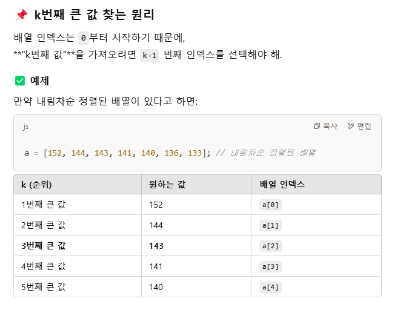

기록한 값 중 K번째로 큰 수를 출력하는 프로그램
set 함수 - 중복 제거
tmp를 바로 사용할 수 없는 이유
Set은 순서를 보장하지 않아서 정렬이 필요함.
Set은 배열이 아니라 .sort()를 직접 사용할 수 없음.
a를 따로 만드는 이유
Set을 배열로 변환하기 위해
내림차순 정렬
a[k-1]로 k번째 큰 값을 쉽게 찾을 수 있음!
Array.from
Array.from 은 유사 배열 객체를 배열로 바꾸는데 사용
Set 객체 -> Array.from
